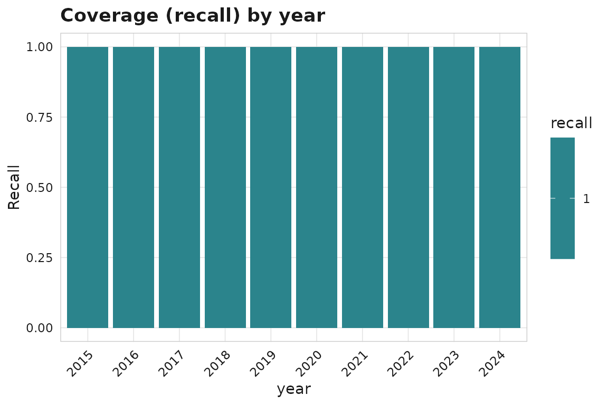
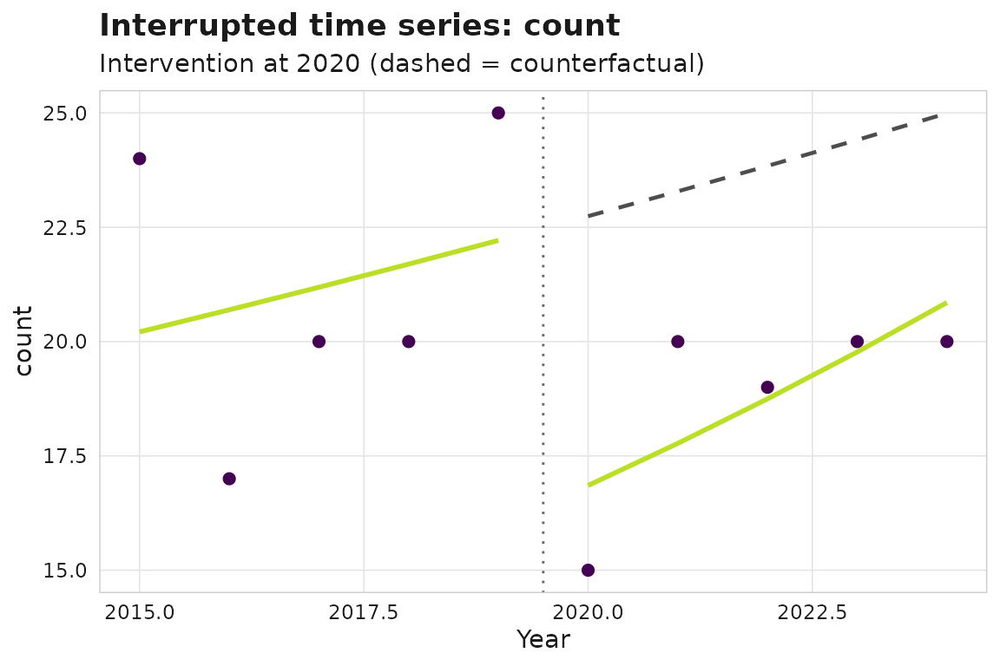

Research-management analytics: coverage, attribution, and policy evaluation
Source:vignettes/research-management-analytics.Rmd
research-management-analytics.RmdThis article walks an end-to-end research-management study: auditing an institution’s publication output against a ground-truth tracker, capturing affiliations robustly, evaluating whether an intervention changed output, and summarising impact defensibly. Everything runs on synthetic example data.
A reproducible starting corpus
For arbitrary tabular sources, sm_corpus_from_tables()
is the recommended ingestion path: it validates required columns,
coerces types, fills missing optional tables, and returns a valid
sm_corpus.
works <- data.frame(
work_id = paste0("W", 1:4),
title = c("Spatial transcriptomics in cancer",
"Immune checkpoint resistance",
"A trial of biomarker discovery",
"Single-cell atlas of the tumour"),
year = c("2018", "2019", "2020", "2021"), # character -> coerced to integer
doi = paste0("10.1234/example.", 1:4),
cited_by_count = c(40, 12, 5, 1)
)
corpus <- sm_corpus_from_tables(list(works = works))
corpusFor the rest of the article we use the larger built-in synthetic corpus.
corpus <- sm_example_corpus(n_works = 200, seed = 1)1. Coverage auditing
Suppose a manual tracker lists the works the institution should have. We can measure recall and precision of the corpus against it, and see which years are worst covered.
reference <- corpus$works[1:150, c("work_id", "doi", "title", "year")]
names(reference)[1] <- "id"
cov <- sm_coverage_audit(corpus, reference, by = "year", match = "doi")
cov
summary(cov)
#> # A tibble: 1 × 8
#> recall precision f1 n_corpus n_reference n_matched n_corpus_only
#> <dbl> <dbl> <dbl> <int> <int> <int> <int>
#> 1 1 0.75 0.857 200 150 150 50
#> # ℹ 1 more variable: n_reference_only <int>
ggplot2::autoplot(cov)
Breakdowns are returned as a single flat tibble; use
sm_coverage_breakdowns() to access or filter them:
sm_coverage_breakdowns(cov, dimension = "year")
#> # A tibble: 10 × 5
#> dimension level n_reference n_matched recall
#> <chr> <chr> <int> <int> <dbl>
#> 1 year 2015 18 18 1
#> 2 year 2016 12 12 1
#> 3 year 2017 15 15 1
#> 4 year 2018 16 16 1
#> 5 year 2019 19 19 1
#> 6 year 2020 9 9 1
#> 7 year 2021 16 16 1
#> 8 year 2022 13 13 1
#> 9 year 2023 17 17 1
#> 10 year 2024 15 15 1Source coverage can be checked against a journal master list by ISSN
(sm_journal_in_index()), and two corpora reconciled by
content with sm_reconcile().
ref_index <- utils::read.csv(
system.file("extdata", "example_journal_index.csv", package = "scimapR"),
stringsAsFactors = FALSE
)
sm_journal_in_index(c("1078-8956", "9999-9999"), index = "doaj",
reference_list = ref_index)
#> # A tibble: 2 × 5
#> issn index in_index matched_title matched_issn_type
#> <chr> <chr> <lgl> <chr> <chr>
#> 1 1078-8956 doaj TRUE Nature Medicine print
#> 2 9999-9999 doaj FALSE NA NAPassing the same index to
sm_coverage_audit(index_table = ) assesses record
capture and journal indexability together – “did we
capture this paper” and “is its journal indexed” in one pass:
cov_idx <- sm_coverage_audit(corpus, reference, match = "doi",
index_table = ref_index)
cov_idx$indexability
#> # A tibble: 1 × 2
#> indexable n_records
#> <lgl> <int>
#> 1 FALSE 2002. Affiliation capture and attribution
Hand-rolled affiliation regex is brittle.
sm_affiliation_match() uses a maintained, extensible
dictionary (with multilingual variants and an email-domain fallback),
and sm_attribute_institution() rolls matches up to a
controlled vocabulary.
corpus$authorships$raw_affiliation[1:3] <- c(
"Bundeswehrkrankenhaus Berlin",
"Charite - Universitatsmedizin Berlin",
"Walter Reed Army Institute of Research"
)
corpus <- sm_affiliation_match(corpus)
head(subset(corpus$authorships, !is.na(institution_match),
select = c(work_id, institution_match, match_method)), 3)
#> # A tibble: 3 × 3
#> work_id institution_match match_method
#> <chr> <chr> <chr>
#> 1 W000000001 Bundeswehr Hospital pattern
#> 2 W000000001 Charite Berlin pattern
#> 3 W000000001 Walter Reed pattern
ror <- utils::read.csv(
system.file("extdata", "example_ror.csv", package = "scimapR"),
stringsAsFactors = FALSE
)
corpus <- sm_attribute_institution(corpus, vocabulary = "ror", ror_table = ror)3. Policy evaluation
Did an intervention in 2020 change output? An interrupted time series fits a level shift and slope change with a counterfactual.

For citation-based outcomes, citation-immature recent years are
excluded automatically (sm_citation_maturity() exposes the
same flags on works).
A treated-vs-control comparison uses difference-in-differences. Here we tag two illustrative institution groups.
4. Counting and robust impact
Fractional counting attributes a multi-author paper’s single unit of credit across its contributors.
head(sm_count(corpus, method = "fractional", level = "author"), 5)
#> # A tibble: 5 × 5
#> entity_id entity_name n_works credit weighted_citations
#> <chr> <chr> <int> <dbl> <dbl>
#> 1 A000000001 Raj Fischer 41 10.2 191.
#> 2 A000000049 Mohammed Liu 16 4.79 103.
#> 3 A000000060 Mohammed Kumar 13 4.68 64.3
#> 4 A000000070 Mei Mueller 13 4.38 91.3
#> 5 A000000041 Raj Andersson 11 4.16 79.9Heavy-tailed metrics are summarised robustly with medians, bootstrap CIs, and the proportion of papers in the global top 10%.
sm_metric_summary(corpus, metric = "citations", seed = 1, n_boot = 500)
#> # A tibble: 1 × 8
#> metric n mean median median_ci_low median_ci_high pp_top10 n_boot
#> <chr> <int> <dbl> <dbl> <dbl> <dbl> <dbl> <int>
#> 1 citations 200 15.6 13 11 15.5 0.1 5005. Reproducible reporting
Finally, sm_figure_manifest() turns a directory of
exported figures into a captions / alt-text manifest for the
manuscript.
dir <- withr::local_tempdir()
gg <- ggplot2::autoplot(its)
ggplot2::ggsave(file.path(dir, "fig_its.png"), gg, width = 6, height = 4,
dpi = 150)
sm_figure_manifest(dir)
#> # A tibble: 1 × 6
#> file caption alt_text width height dpi
#> <chr> <chr> <chr> <int> <int> <dbl>
#> 1 fig_its.png "" "" 900 600 59Together these functions cover the recurring tasks of a
research-coverage and impact study — audit, affiliation capture, policy
evaluation, robust summarisation, and reporting — on top of the
reproducible sm_corpus foundation.